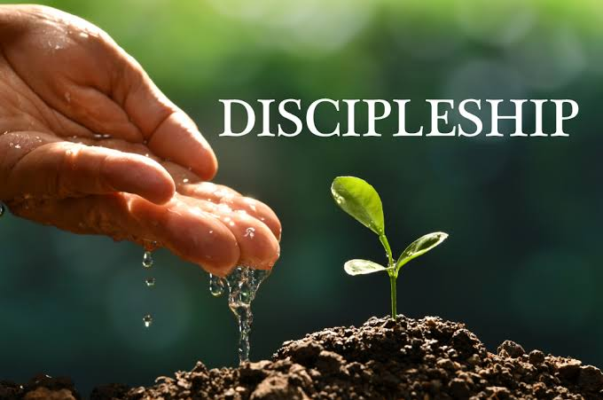

Equip yourself with the wisdom of discipleship as we walk in the footsteps of Jesus,
nurturing hearts and minds in our Discipleship Training.

Discipleship is an integral part of the Great Commission as commanded by Jesus in Matthew 28:18-20.
This life-transforming process and experience of becoming like Jesus is a means to spiritual maturity and fruitfulness.
Hence, you are welcome on board.
Stage 1: Six Lessons –
This is an elementary course for new converts, where disciples are exposed to basic rudiments of our salvation.
Stage 2: Follow the Master –
This stage covers teachings on quiet time, every believer as a part of the body, the two natures,
sources of authority and every believer as a witness.
Stage 3: Serve the Master –
This stage is a continuation of disciples’ experience in total submission to the Lordship of Jesus Christ.
Learning about value system is an important part of the lesson.
Stage 4: Master Life –
This stage is a year-long training experience involving diverse exposures.
This stage gives holistic view of disciples’ transformative experience,
including becoming useful vessels in the body of Christ.
Stage 5: Experiencing God –
The stage expounds ways to experience God, most especially to see where God is working, and to be involved in His work.
Stage 6: Mind of Christ –
This stage deals with applications of Christ’s mindset according to Philippians 2:5.
The lesson challenges believers to replicate what Jesus would do as the Son of man-in His humanity.
Stage 7: In His Presence –
In His Presence is a discipleship lesson that prepares believers for a revolutionary prayer life.
Believers are empowered to be giants in intercession.